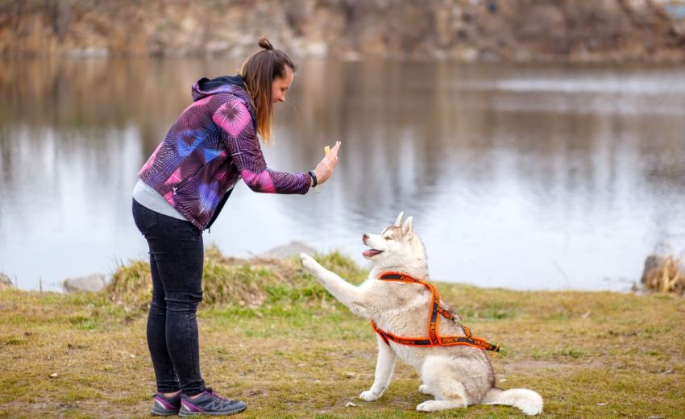
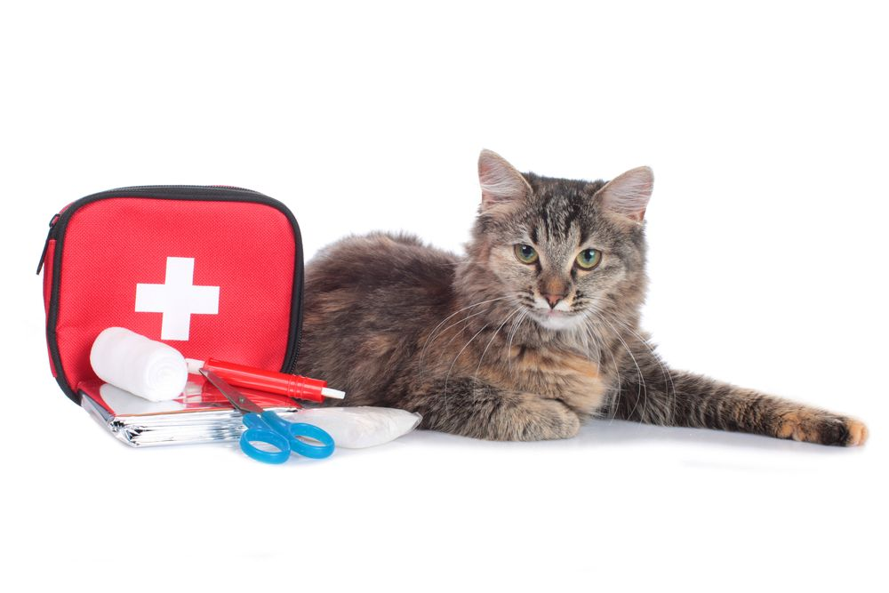

Training is essential for the safety of the dog as well as of everybody around. It can make your dog more sociable and help them during their boarding or play time. Thank you for trusting us with the responsibility of training your pup/dog.
Following are the basic training commands that we teach:

In the case of an emergency, pet owners should be equipped with the information and skills needed to assess the situation, administer the appropriate care, or stabilize an injured pet until qualified veterinary care can be obtained.
Following are some first aid care tips that every pet owner should be aware of, in order to avoid chaos and panic in the event of an emergency
Note: Always remember that any first aid administered to your pet should be followed by immediate veterinary care. First aid care is not a substitute for veterinary care, but it may save your pet's life until it receives veterinary treatment.
1. Always keep the following items at your house for ease of access: